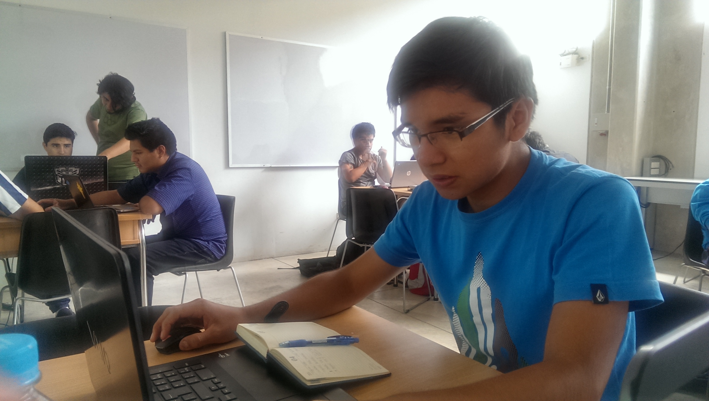

Optimización de tiempo
El usuario se remite a analizar solo las estadísticas brindadas por el sistema complementario de manera que se pueden monitorear más de un recurso hídrico por persona.
Alumno del UTEC Academy 2015
y estudiante de Ingeniería Industrial
Medio en el que registro mi desempeño en el curso...
Este sitio ha sido creado para el curso del UTEC Academy 2015. Es así que podrán encontrar las tareas o asignaciones desarrolladas, y el proceso por el cual elaboré mi proyecto final. Este curso, como su nombre lo dice, lo llevé en la Universidad de Ingeniería y Tecnología (UTEC) en Lima, Perú.
A continuación se presentan las tareas elaboradas en orden cronológico...
El presente proyecto soluciona el problema de la ineficiencia en la toma de datos de los parámetros fisicoquímicos de diversos recursos hidrícos. En este sentido se plantea un monitoreo automatizado mediante una estructura autónoma que permita al usuario recoger la información para que posteriormente se realice las estadísticas respectivas.
El usuario se remite a analizar solo las estadísticas brindadas por el sistema complementario de manera que se pueden monitorear más de un recurso hídrico por persona.
Hidrochemist Robot posee en su estructura de soporte a paneles solares que le brindan una fuente de energía renovable. De esta manera se muestra amigable con el ambiente.
La construcción de los sensores también son parte del proyecto por lo cual el análisis de costo-beneficio resulta favorable.
Nací y crecí en Lima, Perú. Estudié mi educación secundaria en el Colegio Mayor Secundario Presidente del Perú y actualmente estudío Ingeniería Industrial en la Universidad de Ingeniería y Tecnología (UTEC). En cuanto mi trabajo en realización de proyectos, este se encuentra relacionado a temas de programación, electrónica, química y matemática.
